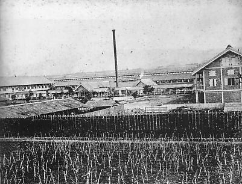

明治期の富岡製糸場外観
NHKによると、カタールで開催されている国連教育科学文化機関（ユネスコ）世界遺産委員会は現地6月21日に、日本で初となる官営の製糸工場である群馬県の「富岡製糸場と絹産業遺産群」について、世界文化遺産への登録を正式に決定した。委員会は「富岡製糸場にフランスの技術が導入されたことで、高品質の絹の大量生産が可能となり、日本の近代化の鍵となった」としている。
読売新聞によると、富岡製糸場は1872年に明治政府が輸出品の生糸産業振興を目的に開設した日本初の官営製糸場で、フランスから取り入れた技術を応用して独自に発展させた養蚕（ようさん）の技術と絡ませて、絹を世界的に大衆化させるきっかけになったが、1987年に創業を停止。その後も製糸場や繭倉庫などの建物はそのまま保存されている。産経新聞によると、今回登録される「富岡製糸場と絹産業遺産群」は製糸場本体のほか近代養蚕農家の原型となった「田島弥平旧宅」、養蚕技術の教育機関である「高山社跡（しゃたく）」、岩のすき間からの自然の風を使って蚕（かいこ）の卵を貯蔵する「荒船風穴」で構成されている。
NHKによると、富岡製糸場の世界遺産登録が決まると、この審査の様子を現地で見守っていた大澤正明群馬県知事は「大きな名誉であると同時に、保全に向けて全力を尽くすことを表明したい」と述べた他、下村博文文部科学大臣は「富岡製糸場と絹産業遺産群が日本と西洋の技術交流を基に果たされた、技術革新の顕著な事例として、高く評価され、登録されたことは大変喜ばしい。人類共通の宝である貴重な世界遺産の保護に万全を期して、後世に確実に引き継ぐとともに、積極的に発信していく」と述べている。また、問題点もあり、製糸場の敷地内にある110の建物のうち、れんがづくりの2つの繭倉庫は、築140年余が経過し、老朽化が激しいところもあるため、富岡市は施設の修復・改修に当たるとしているが、すべての建物の修復には100億円もの費用や30年の期間がかかり、どのように作業を進めたり、費用を捻出するかが課題とされている他、110の建物のうち、現在市民に一般公開されているのは繭工場のうちの1棟と、生糸の生産工場の計2棟しかないため、当時の状況が見学者にわかるようにするために、より多くの施設の公開も求められるという。
読売新聞によると、これにより日本の世界遺産登録は、昨年登録された富士山に続き18件目（文化遺産に限れば14件目）となった。加えて、産業や土木などの近代化遺産としてはすべての世界遺産を通して日本初となった。また産経新聞によると、日本政府はさらに来年、「明治日本の産業革命遺産 九州・山口と関連地域」の世界遺産登録を目指していると報じている。
地元やゆかりの地では
別のNHKの記事によると、富岡製糸場の世界遺産登録が今回決まったことを受け、翌22日、あいにくの雨にもかかわらず、同製糸場の入り口には観光客が500m余の長蛇の列を作った。同市は「22日の来場者は例年の日曜日の約5倍に当たる5000人が訪れると見込まれる」としてボランティアの案内スタッフを増やしたり、マイクでの説明を行うなどの対応に追われている。
更に埼玉新聞によると、この富岡製糸場につながりが深いとされる埼玉県の深谷（ふかや）、本庄の両市でも世界遺産登録の祝賀ムードが漂い、小島進深谷市長、吉田信解（しんげ）本庄市長も「観光に弾みになる」として、世界遺産登録を歓迎する意向を示している。深谷市は同製糸場の建設に携わった渋沢栄一、初代場長の尾高惇忠（しんちゅう）、建設の資材調達のまとめ役を務めた韮塚（にらづか）直次郎の3人を「深谷の3偉人」とたたえている。また本庄市も「競進社模範蚕室」や「旧本庄商業銀行煉瓦倉庫」などの富岡製糸場に関係した施設がある。NHKによると、深谷市では世界遺産登録を祝う会が行われ、小島市長が「富岡製糸場を今の時代まで保存してきた関係者に感謝します。これからも富岡市と一緒に地域を盛り上げていきます」と述べた。
1916年にアルバート・アインシュタインによって存在が予言されていながら、その検出の困難さから長らく存在が確認されていなかった。
重力波そのものは極めて微弱とされており、いざ重力波を検知させるとなると、太陽と地球間の約1.5億キロメートルに及ぶ距離の中で水素原子わずか1個に対する動きの見極めが実現できるような途方も無い検知精度の装置が要求される。今回のLIGOによる発表の信頼度は、99.999999%まで高められているという。今回の発表による正確性が今後実証されれば「ノーベル賞」の受賞は間違いないほどの価値があると、当記事の情報源である産経新聞が号外を発行して報じている。
【国際－社会】
トルコのイスタンブール中心部で爆発 テロの可能性も
トルコのイスタンブールの中心部で、1月12日に爆発が発生した。イスタンブールの県知事は10人が死亡、15人が負傷したことを明らかにした。なおイスタンブールにある日本総領事館には、この爆発で日本人が巻き込まれたという情報は入っていないという。
トルコの放送局であるCNNトルコは捜査当局の話として、この爆発は自爆テロの可能性があると伝えている。その為、トルコ当局では爆破テロの可能性もあるとみて捜査を進めている。また、トルコの地元警察では、次なる爆発に備えるため、現場の立ち入りを規制。
爆発の現場は、旧市街にあるスルタンアフメット広場というところで、この一帯はユネスコの世界遺産に指定されている。また、現場の周囲にはブルーモスクやアヤソフィア博物館がある。なお、この現場付近では2015年1月にも極左勢力の女性が自爆テロを敢行している。
【全国－経済】
生命保険業界11年ぶりの大型再編か?
日本生命が三井生命を買収へ
日本の生命保険業界において第2位へつけていた日本生命保険（以下、日本生命）が、第8位にある三井生命保険（以下、三井生命）を買収して大型再編を狙い最終調整を進めていることが判明した。日本生命と三井生命の買収が実現すれば、日本の生命保険業界では2004年に旧明治生命保険と旧安田生命保険との合併で誕生した明治安田生命保険以来の大規模合併が達成される。
日本生命は元々業界1位のシェアを確保していたが、2015年3月期の決算で一般企業でいうところの売上高に相当する「保険料収入」で、第一生命保険に業界1位から業界2位に下降した。今回の大規模合併で三井生命と経営統合を達成することにより、日本生命保険は業界1位のシェアを取り戻す作戦である。なお「保険料収入」の順位に関して、かんぽ生命保険や外資系の保険会社並びに、損害保険会社系列の生命保険会社は対象外としている。
朝日新聞の調べでは、日本生命は三井生命の大株主である三井住友銀行などから株式を取得すると報道しているが、取得金額については不明である、と報じている。一方で読売新聞の報道を見ると、日本生命が三井生命に対するTOB（株式公開買付け）を2000億円から4000億円にのぼる金額で実行して、三井生命の全株式を取得する方向で動きを見せており、三井住友銀行側と三井住友信託銀行側も日本生命が立案したTOBに応じる考えである、と報じている。大規模合併が達成された際に増える日本生命の保険料収入合算は、5兆8822億円規模にまで向上すると見積もられている。
日本生命が相互会社であることから、当面は株式会社である三井生命を子会社化する方向で話をまとめるという。三井生命のブランドについても現状維持させ、現在の三井生命の契約者に対する影響は無いと報じている。
維新の党とみんなの党の幹事長らが会合を実施、 また、民主党の福山政策調査会長とみんなの党の中西政策調査会長が会合を実施して、 、いずれも、「安倍総理大臣が近く衆議院の解散に踏み切る可能性が強まっている」という認識で一致した上で、選挙区の調整や政策面で連携の強化が必要であるとの意見が一致した。
さらに他の会談として、維新の党の小沢国会議員団幹事長とみんなの党の水野幹事長に加え、維新の党とみんなの党の国会対策委員長が出席した会談が行われた。 会談では「安倍総理大臣が近く衆議院の解散に踏み切る可能性が強まっている」として、両党の候補者で互いに競合して消耗することを避けるため、擁立する選挙区の調整を急ぐべきだという認識で一致した。さらに、野党側から「安倍内閣に対する不信任決議案」が提出された場合、維新の党とみんなの党は「賛成する」方向で、党内の足並みを揃えることを確認した。
さらに、民主党の福山政策調査会長とみんなの党の中西政策調査会長らの会談では、「安倍総理大臣が近く衆議院の解散に踏み切る可能性が強まっている」という認識で一致。そのうえで、民主党とみんなの党の間で、選挙協力を視野に、行政改革など方向性が一致している分野を中心にして、政策面での連携強化を図ってゆくことが確認された。
しかし、みんなの党の中には「野党間で選挙協力をしても政策の実現にはつながらない」「路線が違うのならば、党を分党すべきだ」という意見が両院議員懇談会で出ている為、執行部側では、「出された意見を検討したいとする一方、野党間の連携の選択肢は排除しない」という考えを示した。
【全国－政治】
衆参ダブル選挙の判断 6月1日に表明 安倍首相
2016年5月25日に安倍晋三総理大臣は衆参ダブル選挙を実施するか否かの判断について、国会の会期末となる6月1日までに明らかにする意向を示した。 日本テレビの取材による 。
安倍総理は衆参ダブル選挙を行うことで議席数を現状より上積むことを視野に入れているが、テレビ朝日の報道によれば、自民党が行った調査では、参院選を行っても与党が優位に立てることもあり、安倍総理自身が衆参ダブル選挙を見送ることにしたという。 また、フジテレビの報道によれば、 衆議院の議席をかえって大幅に減らしてしまう見立てがあるという。なお、熊本地震の被害が甚大だったこともあり、衆参ダブル選挙をいま敢行するのは負担が大きいとフジテレビの報道では伝えている。
なお、2017年4月に予定されている消費税増税についても安倍総理からは見送る意向が示されているといい、6月1日の国会会期末までに表明される見通しである。